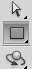
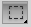
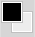
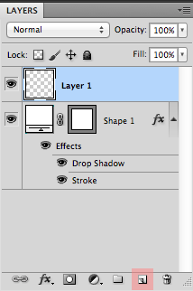

What’s all this about?
This article will teach you all about creating a 9-patch with PhotoShop! This article is targeted towards devs who are pretty familiar with using these drawables but lack in photoshop-fu. I wrote this tutorial a while ago but might as well get it out there instead of it collecting digital dust!
What is 9-Patch and how does it compare with XML Shape drawables?
9-Patch let’s you create scalable raster graphics for all your UI components! They come in handy when you want to theme your UI and get a custom look.
You may be asking yourself, why can’t I just create an XML shape drawable? You certainly could but things like overdraw come into play if you create one with multiple overlapping shapes. For example, say we have the following code:
<?xml version="1.0" encoding="utf-8"?>
<layer-list xmlns:android="//schemas.android.com/apk/res/android">
<item>
<shape>
<solid android:color="@android:color/white"/>
</shape>
</item>
<item>
<shape
android:left="1dp"
android:top="1dp"
android:right="1dp"
android:bottom="1dp">
<solid android:color="@android:color/black"/>
</shape>
</item>
</layer-list>Overdraw is measured by the number of times the system takes to draw what’s on screen. If we have a rectangle with a stroke, like the example above, that counts as two drawing passes. The more drawing passes you have, the more time it takes to render your view hierarchy. It may not seem like a big deal now, but it becomes important when you want to have some silky smooth scrolling in your ListView/RecyclerView.
What would I recommend XML shapes for? Well, anything that can be accomplished in a single drawing pass. For example, I tend to implement some gradients within my designs. XML shapes work perfectly in that case as it save time w/ exporting assets. You can also use that drawable anywhere and are not restricted by the dimensions of your view if you were to use a PNG.
Let’s get started, Boot up PhotoShop!
Let’s make a simple looking button for our super-duper-expert-ace interface. First things first, make sure the units for your rulers is set to Pixels. This can be found in (File > Preferences > Units & Rulers > Units)
Step 1. Create a new file!
Hit File > New (⌘N) and create a 64px x 64px image at a resolution of 72ppi. You can name it whatever you’d like (adding the .9 doesn’t matter just yet).
Step 2. It’s so empty, let’s set up our canvas!
We have our empty canvas on screen now. First we need some rulers! Rulers help us align our object with the pixel grid. This let’s us keep nice crisp edges, which is essential for a clean looking UI. Let’s use these bad boys! Do this by hitting View > Rulers (⌘R).
You can now place a guide by dragging from a ruler on to the canvas. (Tip: Hold shift while dragging to have it snap to the pixel grid). You could also hit View > New Guide and manually enter the position of each guide.
Your task: Put a guide all along the border and another four 8px inside our canvas. You should end up with this:
Step 3. Let’s make some stuff, eh? ( I’m not Canadian, I’m sorry ☹ )
Find the Rectangle tool(U) in your Tools menu (Window > tools). It may be hidden, so find the button that looks like a 2D shape, click and hold to expose a popup menu and hover over Rectangle Tool. Release.

Once you have that selected, click and drag from top-left intersection of our inner guides to the bottom right of the inner. This should of make a new layer in our Layers window. You can expose this window by hitting Window > Layers (fn F7).
Now that we have a our white square, let’s add a border and shadow around it. Right click the “Shape 1” layer and select Blending Options.
Let’s check the Drop Shadow option from the left menu. Let’s also add a dark-gray Stroke on the inside of our rectangle (make sure your settings are the same!).
The (almost) finished product is as follows. You should have something like this:
Step 3. Let’s put the .9 in .9.png!
This is how a 9-Patch works, and is the most important part. We must now designate the fill and repeat parts of the image. The 1px border of our image is read by the system and it is imperative that no pixel in that border be filled for anything other than our markers. The left and top border designates which part of the image is repeated. The right and bottom designates the fill.
We have more than enough space around the border, so we don’t need to expand our canvas. If you ever do, you can hit Image > Canvas Size (⌥⌘C) and add 2px to the width and 2px to the height.
Let’s clear our Guides (View > Clear Guides) and add 4 new ones, 1 px from each edge.
Let’s set our foreground color to black(#000000) in our Tools window, and then select the Rectangular Marquee Tool. We also need to create a new layer for our markers (make sure it is selected).

Rectangular Marquee Tool

Foreground is black

Create & Select the new Layer
Now, let’s select the middle 8 Pixels on the left edge with the marquee tool. Hover over the left guide, click and drag left + down/up. This area should have some moving lines around it. Release the cursor to make a selection and Press G (Paint bucket). Our cursor should now be a Paint bucket! Click into this selected area to fill it with the foreground color(black). Do the same thing for the top edge! Your edges should look something like this:
Our fill are the opposite edges. These borders tells the system where the content goes. If we are placing this graphic as the background for an ImageView, this area indicates where our image will be placed. Select the area that are one pixel below/above the stroke, for both the bottom and the right edge. You should end up with something like this:

So, if we place an Image in that fill, it would look like the following:
All thats left is to save our image into its respective bucket. Go to File > Save for Web & Devices. Hit Save.
Save the image into its respective bucket (XHDPI) and make sure to add the .9 between the file name and png file extension! It is very important that you do this or the system will not recognize that you are using a 9-Patch!
All thats left is reference it in some or code using @drawable/btn_super_duper (XML) or R.drawable.btn_super_duper (Java)
Our final graphic:
Final words
I hope you found this tutorial/article(or tutor-icle…brilliant) helpful! Until next time!
Thanks!